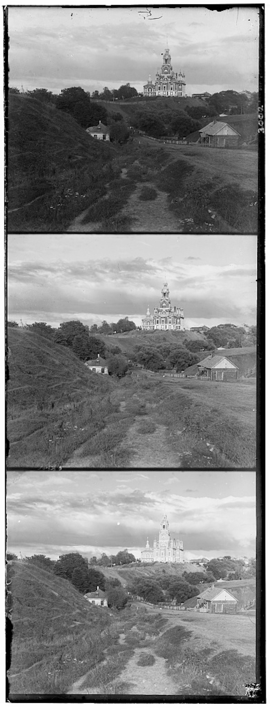
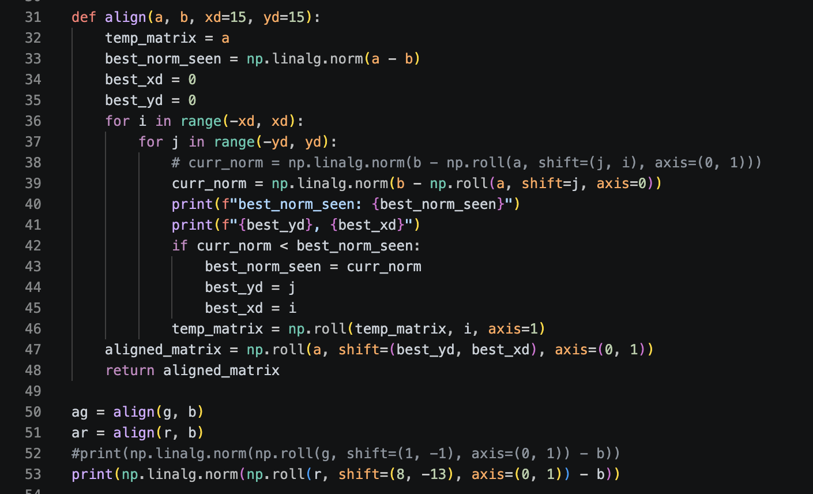
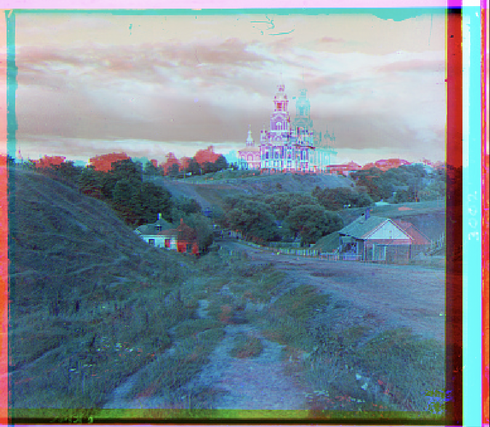
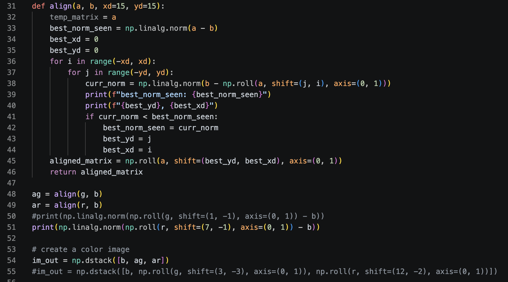
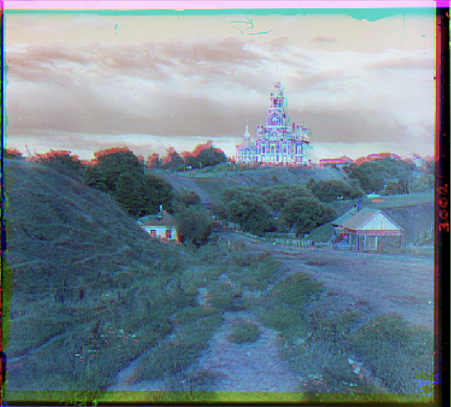

Project 1: Images of the Russian Empire
Colorizing the Prokudin-Gorskii photo collection.

Write body text here. Paragraphs are set in Charter at 20px, the same
measure Medium uses, so a line lands at roughly 80 characters. You can use
italics, bold, inline code, and
links inside a paragraph without extra classes.
The Premise
For this assignment, this one guy Prokudin-Gorskii took a bunch of photos. These photos are supposed to be in color. To do this he took three photos, each with a red, green, or blue filter. The original photo looks like this:

It's pretty messy. The borders are inconsistent, and there are a bunch of speckles everywhere. Our job is to line up these 3 images together so it looks pretty and all the colors match up!
The Approach
So how can we line the images up? Well first we have to split the raw image into 3. Once we split them up,
we can align them according to the blue image. Then, we create some sort of algorithm to align them.
Finally, we can stack the images together and output that as an RGB image.
Thankfully, the starter code does the first and last part for us already. Breaking the image into 3, and stacking them all at the end.
I just have to create some sort of algorithm for aligning.
Aligning
Well, how do you align two images? As it suggests in the project page,
we iterate through all the pixel displacements and we use some sort of metric to see how well they match. The metric I chose was taking the L2 norm of the difference
between the two images (as suggested from the project page). Basically finding how far the images are from each other! We can iterate through all the displacements,
save the displacement with the least distance, then output that.
After some deliberation, the algorithm I came up with looks like this:

Alright, let's see how the images look:

Oh God! Its hideous! There's actually a couple of things I'm doing wrong in my algorithm, do you see them?
First of all, I'm not cropping the image, meaning my norm is taking into account the giant misaligned black borders - not good. Second of all, there's a huge error on line 46. On that line I use temp_matrix to iterate through the x displacements. I initially set temp_matrix to a (has 0 displacement), but my range begins at an x displacement of -15. This means that if the optimal x displacement is 0, it will be logged at -15. You can see this happening in the picture, where y is aligned it's just x which has a bad displacement.
I eventually fix that error in this algorithm here:

Although I didn't add cropping yet (oops forgot to document), I iterate over x and y in the same step, resulting in this:

It's still a little off, but its much more aligned here. At this point though I was sort of lost, I already added cropping and fixed my bug. I knew the cathedral should be aligned by now using simple metrics. It was here I decided to swtich my comparison. Instead of taking the L2 norm, I decided to take the normalized cross correlation, resulting in this algorithm:
def align(a, b, xd=15, yd=15, crop_percent=0.10):
# crop b on all sides
cropped_b = crop_image(b, crop_percent)
best_ncc_seen = -np.inf
best_xd = 0
best_yd = 0
# iterate over differences in x & y, take the ncc, and keep track of the best ncc seen so far
for i in range(-xd, xd):
for j in range(-yd, yd):
# make sure to roll image before cropping
curr_ncc = ncc(crop_image(np.roll(a, shift=(j, i), axis=(0, 1)), crop_percent), cropped_b)
#debugging print statements
print(f"best_norm_seen: {best_ncc_seen}")
print(f"{best_yd}, {best_xd}")
#print(f"{j, i}")
#print(curr_norm)
if curr_ncc > best_ncc_seen:
best_ncc_seen = curr_ncc
best_yd = j
best_xd = i
return (best_yd, best_xd)I also implemented some helper functions here:
# helper functions
def ncc(a, b):
a_flat = a.flatten()
b_flat = b.flatten()
a_mean = np.mean(a_flat)
b_mean = np.mean(b_flat)
norm_a = a_flat - a_mean
norm_b = b_flat - b_mean
numerator = np.sum(norm_a * norm_b)
denominator = np.sqrt(np.sum(norm_a**2) * np.sum(norm_b**2))
ncc = numerator / denominator
return ncc
def crop_image(a, crop_percent):
crop_distance = int(np.size(a, axis=0) * crop_percent)
return a[crop_distance:np.size(a, axis=0) - crop_distance, crop_distance:np.size(a, axis=1) - crop_distance]
def roll_image(a, xy):
return np.roll(a, shift=xy, axis=(0, 1))Finally the images are aligned! Check them out! I also corrected the color order when stacking, which I didn't notice since I was too busy aligning.
Calculated alignments are in the footers. (y, x)
Aligned images!


Image Pyramids!
Part 1: Section header
Every <p>, <h2>, and
<h3> is styled globally, so you only ever paste the bare
tag. Spacing between blocks is handled by the stylesheet.
A subsection header
Use <h3> for smaller steps inside a part.

Drop image files into Project_1/images/ and point
src at them.
def align(a, b):
return np.roll(a, best_shift(a, b), axis=(0, 1))Part 2: Another section
Copy any block above and edit the text. That is the whole system.